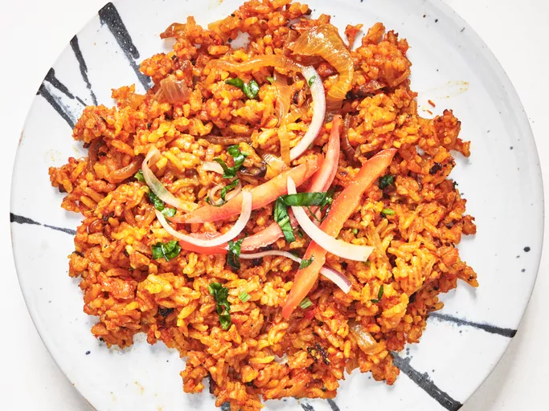

Main Menu - Roscoe's Jollof Rice

Roscoe's Jollof Rice
Roscoe's jollof rice recipe is fragrant and spicy jasmine rice cooked in a pureed tomato and pepper base.
Ingredients
- 1 (14.5 ounce) can tomatoes
- 1 red bell pepper, seeded and roughly chopped
- 1 red onion, cut into chunks
- 4 garlic cloves
- 2 tablespoons minced fresh ginger
- 1 red jalapeno, cut in half lengthwise
- 1 Scotch bonnet pepper, cut in half
- 1/2 cup palm oil
- 2 red onions, thinly sliced
- 1 teaspoon ground turmeric
- 2 beef bouillon cubes, (such as Maggi® beef cubes)
- 1 teaspoon smoked paprika
- 3 cups jasmine rice
- 1 teaspoon thyme, dried or fresh
- 1 bay leaf
- salt and freshly ground black pepper to taste
- 3 cups water
Steps
- Combine tomatoes, red bell pepper, red onion, garlic, ginger, red jalapeno, and Scotch bonnet in a blender; blend until smooth.
- Heat palm oil in a large Dutch oven over medium heat. Add onions and cook, stirring frequently, until softened, 6 to 8 minutes. Remove onions from the pan.
- Pour in tomato base and cook on low until reduced by half. Stir in tomato paste, turmeric, Maggi cubes, and smoked paprika. Cook, stirring, until the mixture reduces and becomes an even deeper red, about 2 minutes.
- Stir in rice, thyme, and bay leaf, and season with salt and pepper. Stir in water and cover with a lid. Cook on low for 35 minutes. Turn off the heat and let sit covered for 15 minutes.
- Fluff rice with a fork, taste and adjust seasonings, and serve.
Home